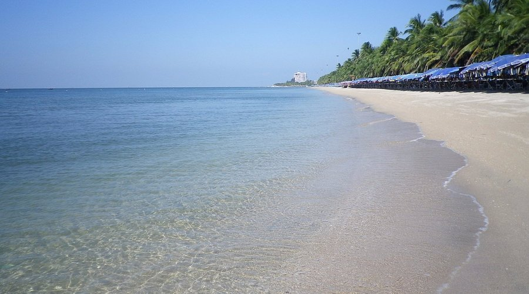

Top 4 Famous Restaurants in Chonburi You Should Try
We have carefully selected four must-visit restaurants in Chonburi, perfect for both locals and visitors. Whether you crave fresh seafood, authentic Thai flavors, or delightful steaks, these restaurants offer the best dining experiences in town.
